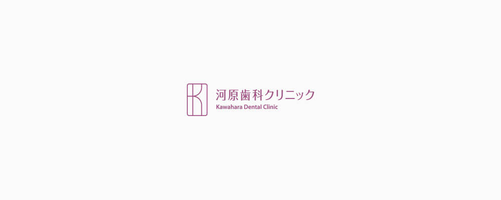

- TOP
- タイトルがはいります

テキストがはいりますテキストがはいりますテキストがはいりますテキストがはいりますテキストがはいりますテキストがはいりますテキストがはいりますテキストがはいりますテキストがはいりますテキストがはいりますテキストがはいりますテキストがはいりますテキストがはいりますテキストがはいりますテキストがはいりますテキストがはいりますテキストがはいりますテキストがはいります
h3タイトルがはいります
テキストが入ります。テキストが入ります。テキストが入ります。テキストが入ります。テキストが入ります。テキストが入ります。テキストが入ります。テキストが入ります。テキストが入ります。テキストが入ります。テキストが入ります。テキストが入ります。テキストが入ります。テキストが入ります。テキストが入ります。テキストが入ります。テキストが入ります。テキストが入ります。テキストが入ります。テキストが入ります。テキストが入ります。テキストが入ります。テキストが入ります。テキストが入ります。テキストが入ります。テキストが入ります。テキストが入ります。テキストが入ります。テキストが入ります。テキストが入ります。テキストが入ります。テキストが入ります。
h4タイトルがはいります

テキストが入ります。テキストが入ります。テキストが入ります。テキストが入ります。テキストが入ります。テキストが入ります。テキストが入ります。テキストが入ります。テキストが入ります。テキストが入ります。テキストが入ります。テキストが入ります。テキストが入ります。テキストが入ります。テキストが入ります。テキストが入ります。テキストが入ります。テキストが入ります。テキストが入ります。テキストが入ります。テキストが入ります。テキストが入ります。テキストが入ります。テキストが入ります。テキストが入ります。テキストが入ります。テキストが入ります。テキストが入ります。テキストが入ります。テキストが入ります。テキストが入ります。テキストが入ります。
h5タイトルがはいります
テキストが入ります。テキストが入ります。テキストが入ります。テキストが入ります。テキストが入ります。テキストが入ります。テキストが入ります。テキストが入ります。テキストが入ります。テキストが入ります。テキストが入ります。テキストが入ります。テキストが入ります。テキストが入ります。テキストが入ります。テキストが入ります。テキストが入ります。テキストが入ります。テキストが入ります。テキストが入ります。テキストが入ります。テキストが入ります。テキストが入ります。テキストが入ります。テキストが入ります。テキストが入ります。テキストが入ります。テキストが入ります。テキストが入ります。テキストが入ります。テキストが入ります。テキストが入ります。
H6テキストが入ります
テキストが入りますテキストが入
りますテキスト
が入りますテキストが入りますテキストが入りますテ
キストが入りますテキストが入りますテキストが入りますテキストが入りますテキストが入りますテキストが入りますテキストが入りますテキストが入りますテキストが入りますテ
キストが入りますテキストが入りますテキストが入ります
- テキストが入ります。テキストが入ります。テキストが入ります。
- テキストが入ります。テキストが入ります。テキストが入ります。
- テキストが入ります。テキストが入ります。テキストが入ります。
- テキストが入ります。テキストが入ります。テキストが入ります。
- テキストが入ります。テキストが入ります。テキストが入ります。
- テキストが入ります。テキストが入ります。テキストが入ります。
Pick UP
タイトルがはいります
テキストが入ります。テキストが入ります。テキストが入ります。テキストが入ります。テキストが入ります。テキストが入ります。テキストが入ります。テキストが入ります。テキストが入ります。テキストが入ります。テキストが入ります。テキストが入ります。テキストが入ります。テキストが入ります。テキストが入ります。テキストが入ります。テキストが入ります。テキストが入ります。テキストが入ります。テキストが入ります。テキストが入ります。テキストが入ります。テキストが入ります。テキストが入ります。テキストが入ります。テキストが入ります。テキストが入ります。
| テキストがはいります | テキストが入ります。テキストが入ります。テキストが入ります。テキストが入ります。テキストが入ります。 |
|---|---|
| テキストがはいります | テキストが入ります。テキストが入ります。テキストが入ります。テキストが入ります。テキストが入ります。 |
| テキストがはいります | テキストが入ります。テキストが入ります。テキストが入ります。テキストが入ります。テキストが入ります。 |
※表は左右にスクロールして確認することができます。
| 付帯工事費 | 借入関連 | その他費用 |
|---|---|---|
| どんなにオシャレな家でも、使い勝手が悪ければいい家とは言えません。特に家事をする方にとって使いやすい動線を意識しましょう。 | どんなにオシャレな家でも、使い勝手が悪ければいい家とは言えません。特に家事をする方にとって使いやすい動線を意識しましょう。 | どんなにオシャレな家でも、使い勝手が悪ければいい家とは言えません。特に家事をする方にとって使いやすい動線を意識しましょう。 |
| 付帯工事費 | 借入関連 | その他費用 |
|---|---|---|
| どんなにオシャレな家でも、使い勝手が悪ければいい家とは言えません。特に家事をする方にとって使いやすい動線を意識しましょう。 | どんなにオシャレな家でも、使い勝手が悪ければいい家とは言えません。特に家事をする方にとって使いやすい動線を意識しましょう。 | どんなにオシャレな家でも、使い勝手が悪ければいい家とは言えません。特に家事をする方にとって使いやすい動線を意識しましょう。 |
- Step 01
-
テキストが入ります。
テキストが入ります。テキストが入ります。テキストが入ります。テキストが入ります。テキストが入ります。テキストが入ります。テキストが入ります。テキストが入ります。テキストが入ります。テキストが入ります。テキストが入ります。テキストが入ります。テキストが入ります。テキストが入ります。テキストが入ります。テキストが入ります。テキストが入ります。テキストが入ります。テキストが入ります。テキストが入ります。テキストが入ります。テキストが入ります。テキストが入ります。テキストが入ります。テキストが入ります。テキストが入ります。テキストが入ります。テキストが入ります。テキストが入ります。テキストが入ります。テキストが入ります。テキストが入ります。
- Step 02
-
テキストが入ります。
テキストが入ります。テキストが入ります。テキストが入ります。テキストが入ります。テキストが入ります。テキストが入ります。テキストが入ります。テキストが入ります。テキストが入ります。テキストが入ります。テキストが入ります。テキストが入ります。テキストが入ります。テキストが入ります。テキストが入ります。テキストが入ります。テキストが入ります。テキストが入ります。テキストが入ります。テキストが入ります。テキストが入ります。テキストが入ります。テキストが入ります。テキストが入ります。テキストが入ります。テキストが入ります。テキストが入ります。テキストが入ります。テキストが入ります。テキストが入ります。テキストが入ります。テキストが入ります。
院内紹介
-
受付
広いカウンターのある明るい受付です。カウンターにはデンタルグッズをご用意しております。お求めの方はお声がけください。
-
待合室
広いカウンターのある明るい受付です。カウンターにはデンタルグッズをご用意しております。お求めの方はお声がけください。
駅からお越しの方へ
JR京都線（東海道本線）高槻駅より
-
①中央改札を出て右に進み、右手にある階段を降りてください。
-
②階段を降りると右手にグリーンプラザ2号館があります。そこの横断歩道を渡って右（南）にお進みください。
-
③30mほど歩くと、左手に当クリニックがあります。
-
④こちらからお入りください。
新型コロナウイルス感染症に対する感染対策について
現在、河原歯科クリニックは新型コロナウイルスの感染拡大を鑑み、院内感染防止のための対策を下記の通り行っております。
-
01
全来院患者様に体温測定をお願いしております。
ご協力いただけない方の診療は感染予防のため、お断りする場合がございます。 -
37.5℃以上の患者様には予約の変更をお願いしております。また、咳が出るなど体調が少しでもよくない場合は受診を控えていただきますようお願い申しあげます。
-
02
ウイルスに対する効果が報告されていますので、
診療開始前にイソジンまたはリステリンで「うがい」を行っていただきます。 -
ヨードアレルギー、妊娠・授乳中、甲状腺疾患をお持ちの方は必ずスタッフまでお申し出ください。場合により塩素の匂いや細かい水滴がついていることがございますが、ご理解ください。また、診療中の事故防止のため、お顔にタオルをおかけすることがありますが、患者様ごとに取り替えておりますのでご安心ください。
小児歯科診療を「成功」させる5か条
- ｢歯医者さんは怖い」というイメージを植えつけないよう、普段の会話に注意しましょう
- 歯科医院での「痛かった思い出」や「注射の話」などは、お子様の前では控えてください
- 歯医者さんはお口を健康にしてくれる“いいところ”だということを丁寧に伝えましょう
- きちんとお子様の話を聞いてくれる、相性のいい歯医者さんを選んでください
- うまくいかなくても叱らず、治療後はしっかりほめてあげましょう
- ｢歯医者さんは怖い」というイメージを植えつけないよう、普段の会話に注意しましょう
- 歯科医院での「痛かった思い出」や「注射の話」などは、お子様の前では控えてください
- 歯医者さんはお口を健康にしてくれる“いいところ”だということを丁寧に伝えましょう
- きちんとお子様の話を聞いてくれる、相性のいい歯医者さんを選んでください
- うまくいかなくても叱らず、治療後はしっかりほめてあげましょう